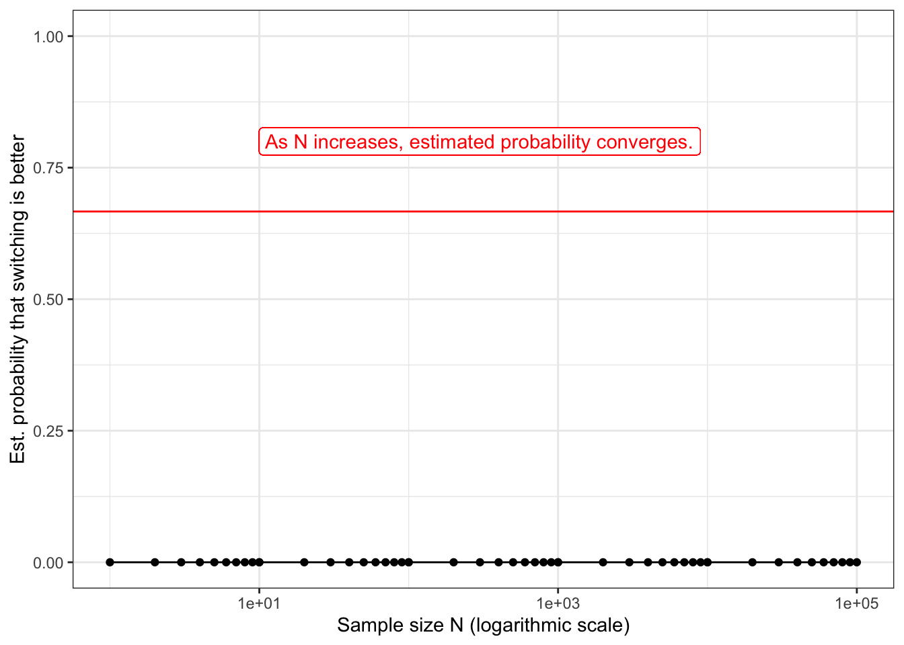
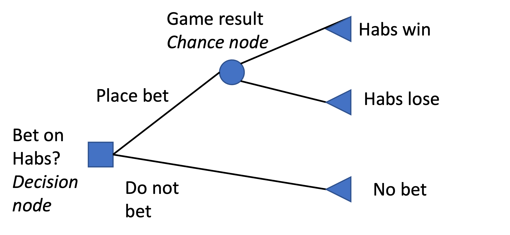
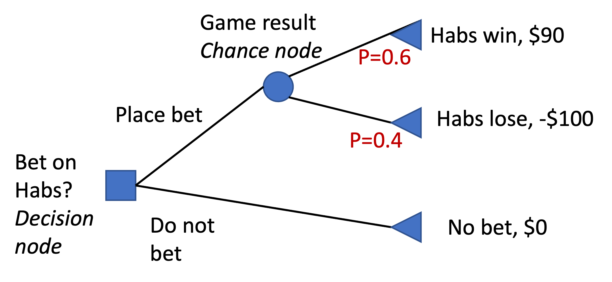
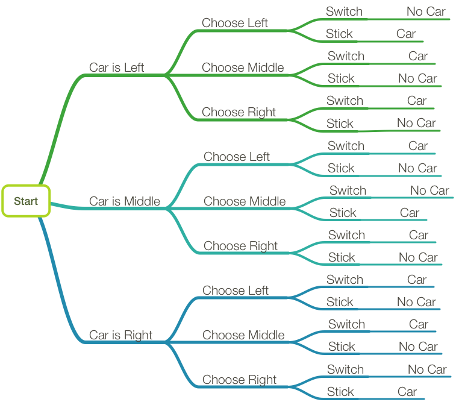
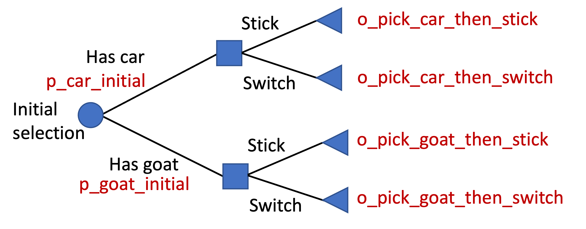
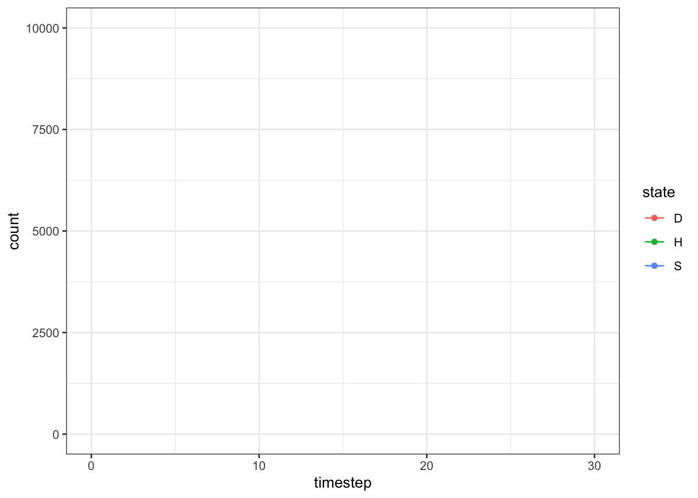
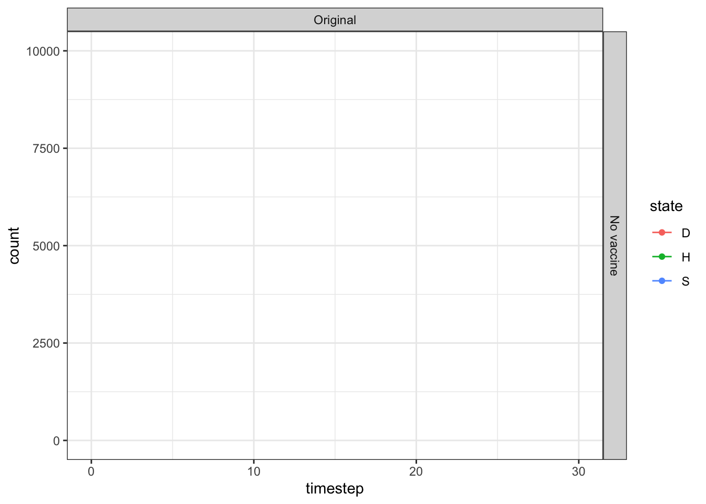

#load necessary packages. IF they aren't installed, type install.packages(c("ggplot2","tidyr")) into your console
library(ggplot2)
library(tidyr)Assignment 0: Coding simple models
This assignment aims to be a fairly gentle introduction to the types of models we’ll cover in this class. It is self-contained, meaning students can complete it before attending lecture to get a sense of whether the class interests them. While this assignment should give a feel for future assignments, the coding component is lighter, with a lot of the code pre-written and a lot of hints.
To turn in the completed assignment, please upload the html document created when you render the .qmd file to MyCourses.
Section 1: Monty Hall problem
The Monty Hall problem is a classic probability brain riddle. It’s named after Canadian game show host Monty Hall from the 1980’s game show Let’s Make a Deal. Here’s the problem:
You have three doors in front of you. The host tells you that a car is behind one, and a goat is behind the other two. You will get to open one door, and if it’s a car, you win! The host lets you make an initial choice, so you select a door. Then, the host tells you they will reduce your options by eliminating one of the other doors. They open a door (not the one you picked) and reveal a goat. Now they give you a second choice: would you like to open the door you selected originally (stick), or change to the other door that they haven’t eliminated (switch)? If you pick the door with the car, you win it. What is the better decision?
Take a minute to think about the problem. What do you think the answer is?
Most people find the answer counter-intuitive, at least until they work through it themselves. In the next two sections, you’ll solve this problem with two different modeling tools from the class: with Monte Carlo simulation and decision trees.
Section 1A: Solving Monty Hall with simulation
Monte Carlo simulation is a way to estimate the probability distribution of an outcome from a probabilistic event with known (or assumed) structure. This is done by generating many manifestations of the probabilistic event and then analyzing the proportion of times each possible outcome appeared.
For most health-related decision problems, the inputs to the model must be estimated. In the case of the Monty Hall problem, we can derive the exact inputs from the structure of the problem:
The car is equally likely to be behind any of the three doors, so our original choice has a 1 in 3 chance of being correct
Monty will always eliminate an option by opening a door that is not your choice and does not contain the car
If our initial choice is correct, we will win if we stick with it
If our initial choice was incorrect, since Monty eliminated one of the two other choices, we will always win if we switch
In the following code block, simulate a single instance of the Monty Hall problem by replacing the ’NA’s with code that functions as described in the comments. Then, run the block of code.
# Randomly assign the prize to a door. Replace NA with a function that will return the number 1, 2, or 3 with equal probability. Hint: type ?sample in the console
prize <- NA
# Randomly pick a door. Should also be 1, 2, or 3 with equal probability
choice <- NA
# List Monte's options for which door to reveal. He cannot reveal your choice or the door with the car (could be the same door). Start with the list 1, 2, or 3, but then remove the option(s) corresponding to the prize and to your choice.
monty_options <- NA
# Randomly select one of the doors in Monte's options for him to reveal
monty_reveal <- NA
#Assign the variable optimal_choice with 'stay' if it's better to stay with your choice and with 'switch' if it's better to switch. Type ?ifelse into the console for help.
optimal_choice <- NA
# Check your output by printing each variable to the console. Rerun this whole code chunk multiple times and then look at the printed variables to make sure you see what you expect.
print(c(
paste0("Prize: door ", prize),
paste0("Your choice: door ", choice),
paste0("Monty's options: doors ", paste(monty_options, collapse=",")),
paste0("Monty's reveal: door ", monty_reveal),
paste0("Optimal choice: ", optimal_choice)
))[1] "Prize: door NA" "Your choice: door NA"
[3] "Monty's options: doors NA" "Monty's reveal: door NA"
[5] "Optimal choice: NA" Monte Carlo simulations involve re-running a scenario over and over to estimate the probability of different outcomes. In R, functions are used for bits of code we plan to use multiple times. Functions usually have both inputs and an output, but in this case we will use a function with no inputs. In this code chunk, copy and paste bits of your code from the previous chunk into the function. Then run the function 10 times to make sure it seems to be working.
#Inputs: none
#Outputs: Optimal choice ("stay" or switch")
monty_hall <- function() {
optimal_choice=NA #replace this with the proper code
return(optimal_choice)
}
#Run the function 10 times
for (run in 1:10){
print(monty_hall())
}[1] NA
[1] NA
[1] NA
[1] NA
[1] NA
[1] NA
[1] NA
[1] NA
[1] NA
[1] NANow, we will repeat the simulation several times. If we run it enough times, the proportion of simulation runs for which the player should switch doors should approximate the probability switching is better, at least if our sample size is sufficiently large. In this code chunk, replicate the simulation 100,000 times.
N_reps = 100000 #number of replications
#create a vector of 'NA's of length N_reps. Hint: type ?rep into the console
Sim_outcomes <- NA
for(rep in 1:N_reps){
#Replace the rep'th entry of Sim_outcomes with the outcome of a monty_hall simulation
NA
}
#Check your work by looking at the size of Sim_outcomes, the first 5 entries, and the last 5 entries
length(Sim_outcomes)[1] 1head(Sim_outcomes)[1] NAtail(Sim_outcomes)[1] NATo calculate the probability you should switch, add up all of the replications in which the optimal decision was to switch and divide by the number of replications. The proportion of replications for which switching is optimal should approximate the probability that switching is the right decision, as long as our sample size is big enough.
#Count entries of Sim_outcomes where the optimal decision was "switch"
N_switch <- NA
P_switch_better <- N_switch / N_reps
#Print these variables to check
N_switch[1] NAP_switch_better[1] NAThe result should be close to 0.667 or 2/3. How does this compare to your initial guess?
Monte Carlo simulations become more accurate with higher number of replications. To explore this for the Monty Hall problem, let’s estimate the probability for a range of sample sizes and then plot it.
#Create a vector of the simulation sizes we want to analyze
sim_sizes <- lapply(10^(0:4), function(x) x*1:10) |>
unlist()
#Create an empty list to store the estimated probability switching is better for each simulation size. No need to edit
p_switch_better <- c()
for (N in sim_sizes){
#Calculate the probability switching is better on the first N replications in the vector Sim_outcomes. Hint: can google 'subsetting vectors in R'
P_switch_better_subset <- 0#Repalce the 0
#Append the result to p_est_switch_better
p_switch_better <- c(p_switch_better, P_switch_better_subset)
}
#Code from here down does not need to be edited; it should work if everything above is correct. But take a look and try and understand it!
#Create a dataframe
df_sim_size_outcomes <- data.frame(
n = sim_sizes,
p_switch_better = p_switch_better
)
#Print the dataframe
df_sim_size_outcomes n p_switch_better
1 1e+00 0
2 2e+00 0
3 3e+00 0
4 4e+00 0
5 5e+00 0
6 6e+00 0
7 7e+00 0
8 8e+00 0
9 9e+00 0
10 1e+01 0
11 1e+01 0
12 2e+01 0
13 3e+01 0
14 4e+01 0
15 5e+01 0
16 6e+01 0
17 7e+01 0
18 8e+01 0
19 9e+01 0
20 1e+02 0
21 1e+02 0
22 2e+02 0
23 3e+02 0
24 4e+02 0
25 5e+02 0
26 6e+02 0
27 7e+02 0
28 8e+02 0
29 9e+02 0
30 1e+03 0
31 1e+03 0
32 2e+03 0
33 3e+03 0
34 4e+03 0
35 5e+03 0
36 6e+03 0
37 7e+03 0
38 8e+03 0
39 9e+03 0
40 1e+04 0
41 1e+04 0
42 2e+04 0
43 3e+04 0
44 4e+04 0
45 5e+04 0
46 6e+04 0
47 7e+04 0
48 8e+04 0
49 9e+04 0
50 1e+05 0#Plot it.
ggplot(data = df_sim_size_outcomes,#all ggplots use dataframes
#The x and y values are considered "aesthetics" and are defined in aes()
aes(x = n, y = p_switch_better))+
#Add points and lines
geom_line()+geom_point()+
#Set x axis to log scale
scale_x_log10()+
#theme_bw looks nicer than the ggplot default
theme_bw()+
#Set the Y axis to range between 0 and 1
ylim(c(0,1))+
#Label the x and y axes
xlab("Sample size N (logarithmic scale)")+
ylab("Est. probability that switching is better")+
#Add a horizontal reference line in red
geom_hline(yintercept = 2/3, color = "red")+
#Add a label
geom_label(label = "As N increases, estimated probability converges.",
x = 1,
y=.8,
hjust = "left",
color="red")
Section 1B: Monty Hall decision tree
Decision trees are great for representing relatively small decision problems where each decision has a discrete set of options and each chance event has a discrete set of possible outcomes, like the roll of a die. In a decision tree, decisions are represented by square decision nodes and chance events are represented by round chance nodes. Branches off of decision node represent your choices, and branches off of a chance node represent possible outcomes. Decision trees without any numbers can be used to illustrate a decision problem. Here’s an example for someone deciding whether or not to bet on the Habs for an upcoming hockey game.

Adding numbers to the decision tree allows us to calculate the value of each decision and identify which alternative will maximize our expected benefit. Here’s the same example, but with an estimated/believed probability assigned to each chance event and a value assigned to each outcome. In this example, we believe there’s a 60% probability the Habs win. If we place a bet, we get $90 if they win and lose $100 if they lose. If we don’t bet, the value to us is $0.

The expected value of placing a bet is $90*0.6 + -$100*0.4 = $14. This exceeds the $0 in benefit we would get if we didn’t place a bet; in this case, placing the bet would maximize our expected benefit. If we believe there’s only a 50% change the Habs win, the expected value of the bet changes to $90*0.5 + -$100*0.5 = -$5. Since the expected value is less than $0, we should not place the bet (assuming we are risk neutral).
Going back to the Monty Hall problem, one can enumerate every possibility in a decision tree. Below is a nice example from https://doisinkidney.com/posts/2015-08-03-monty-hall.html. While this version didn’t make the distinction, you should be able to figure out which nodes are decisions (usually represented with a square) and which are random chances (usually represented with a circle).

However, we’re going to take advantage of the symmetry of this problem to develop and solve a simpler representation. Because the probability of selecting the door with the car is the same regardless of which door you choose, we can represent it as though you have no choice at all. Using this, we start our decision treee with a chance node that indicates whether our initially selected door has a car or a goat behind it. Next, the host removes one of the remaining options and you have a decision: stick with the existing door or switch.
Here’s a picture of the simplified tree. Shown in red are the r names we will use for the numerical variables we’ll need to define to solve the tree. Those variables are the probability that the initial selection has a car or a goat and the outcome of sticking with your choice or switching, conditioned on whether your originally-selected door has a car or goat behind it.

Let’s solve the decision tree problem. To do so, we just need to assign numbers (probabilities, outcome values) to the decision tree variables and then do some simple arithmetic.
#Define the variables; replace NA with the proper values
#The probability your initially selected door contains a car or a goat. Must sum to 1.
p_car_initial = NA
p_goat_initial = NA
#For outcome variables, use 1 if the decision results in winning the car and 0 otherwise.
o_pick_car_then_stick = NA
o_pick_car_then_switch = NA
o_pick_goat_then_stick = NA
o_pick_goat_then_switch = NA
#Estimate the expected probability of each outcome depending on whether you stick or you switch. This is a simple calculation where each possible outcome under the decision is weighted by the probability of that outcome. Use the variables you just defined for this computation rather than typing numbers directly.
p_car_if_stick = NA
p_car_if_switch = NA
print(p_car_if_stick)[1] NAprint(p_car_if_switch)[1] NAHopefully this exercise has helped convince you of the Monty Hall problem solution and illustrated why the counter-intuitive result is correct. There are many ways to solve or explain this solution; free to check out the Wikipedia page for others.
Section 2: A cohort model
In section 2, you will model the health of a cohort of 10,000 individuals over 20 years. Your model will have three health states: Healthy, Sick, and Dead. Individuals will all start healthy, but as time progresses some will get sick and some will die. You will generate a cohort trace plot that shows the percent of individuals in each health state at each timestep. You will perform a simple scenario analysis,and use the model to conduct a simplified health policy analysis, assessing the impact of a hypothetical vaccine.
Let’s get started!
First, we define the model’s parameters. We’ll use a named list l_prms to contain all the parameters. You don’t need to change anything in this code block
#Add all parameters to a named list
l_prms <- list()
#Initial distribution (number of people in each health state at time 0
l_prms$init_H <- 10000 #healthy
l_prms$init_S <- 0 #sick
l_prms$init_D <- 0 #dead
#Use a 30-year time horizon
l_prms$n_timesteps <- 30
#Annual transition probabilities probability of going from one state to another at each timestep
l_prms$p_H_to_S <- .03 #healthy to sick
l_prms$p_H_to_D <- .01 #healthy to dead
l_prms$p_S_to_H <- .02 #sick to healthy (recovering)
l_prms$p_S_to_D <- .07 #sick to dead
#Print l_prms to see the values
l_prms$init_H
[1] 10000
$init_S
[1] 0
$init_D
[1] 0
$n_timesteps
[1] 30
$p_H_to_S
[1] 0.03
$p_H_to_D
[1] 0.01
$p_S_to_H
[1] 0.02
$p_S_to_D
[1] 0.07We’re going to develop a Markov model, a simple and commonly-used cohort model. You’ll learn a lot more about these later. For now, know that at each time step, individuals can transition from one state to another. Their probability of transitioning depends only on which state their currently in. We’re going to use a for loop to develop the Markov model; later in the course we’ll learn how to use matrix multiplication for more efficient modeling.
First, we create the matrix where we track our cohort’s transition between the health states over time. This is sometimes called a cohort trace matrix. We can also go fill in the first row of this matrix (timestep 0) with the initial distribution of the cohort using our parameter table.
#Create a matrix that contains a 'trace' of how your cohort is distributed across the health states at each point in time.
#Matrix length: 31 (the number of timesteps + 1)
#Matrix width: 3 (the number of health states; H=healthy, S=sick, and D=dead)
#Matrix type: integer (can fill it with 0s or as.integer(NA))
#Assign the state names H, S and D as the column names
#HINTS: type ?matrix into your console. Use the values stored in l_prms where possible
#This has errors. Fix it!
m_cohort_trace <- matrix(data=as.integer(NA),
nrow = 2,
ncol = 3,
dimnames = list("timestep"= 1:2,
"state"= c("H","S", "D")))
#Initiallize the first row
#Insert the number of people who are initially 'H'ealthy, 'S'ick, and 'D'ead in the first row of the cohort trace.
#TYPE YOUR CODE HEREEach row of the cohort trace matrix corresponds to one timestep in our model. Next. we will oop over each of then and perform calculations that ‘move’ cohort members between the health states according to our transition probabilities. You should be able to derive these calculations using the following information:
For any given transition \(A \rightarrow B\), the number of people making it from timestep \(i-1\) to \(i\) is equal to the number of people in \(A\) at timestep \(i-1\) times the transition probability \(p_{A \rightarrow B}\).
Anyone who doesn’t transition out of a state remains there in the next timestep.
The number of people in state \(A\) at timestep \(i\) equals the number of people in \(A\) at timestep \(i-1\), plus all the people who transitioned in, minus all the people who transitioned out.
NOTE: In the R programming language, the first element of a vector has index 1 (in contrast to Python, where the first element has index 0). In our cohort trace, the ‘time=0’ realization of the cohort is stored in the first row of the matrix, or the row m_cohort_trace[1, ]. Because of R indexing, row m_cohort_trace[i+1, ] corresponds to the ith timestep, and row m_cohort_trace[i, ] corresponds to the (i-1)th timestep.
#Loop over each timestep and calculate the number of people in each healthstate, using the distribution from the previous timestep (the previous row of the cohort trace matrix) and the transition probabilities (in your parameter list)
for (i in 1:(dim(m_cohort_trace)[1]-1)){
# Healthy state (I've done it for you)
m_cohort_trace[i+1, "H"] <-(
m_cohort_trace[i, "H"]+#H at last timestep
m_cohort_trace[i, "S"]*l_prms$p_S_to_H+#transitions in from S
-1*m_cohort_trace[i, "H"]*l_prms$p_H_to_S+#transitions out to S
-1*m_cohort_trace[i, "H"]*l_prms$p_H_to_D#transitions out to D
)
#Sick state (H can go to S, S can go to H, S can go to D)
#YOUR CODE HERE
#Dead state (H can go to D, S can go to D, no resurrections)
#YOUR CODE HERE
}One property of Markov model is that the number of people is conserved at each timestep. No one ‘escapes’ the model. Therefore, summing across any row of the cohort trace matrix should give you the same value; the original cohort size. Try it.
#Sum across each row of the cohort matrix
#HINT: ?rowSums()Next, we can plot the cohort trace to look at how our cohort transitions over time. You do not need to change anything here; if the preceding chunks are correct, running this chunk after them should produce the trace plot.
#change cohort trace matrix to dataframe (needed for ggplot)
df_cohort_trace <- data.frame(m_cohort_trace)
#Add timestep as a column.
df_cohort_trace$timestep <- seq(0, nrow(df_cohort_trace)-1)
#Convert data.table to long format with three columns
df_cohort_trace_long <- tidyr::gather(df_cohort_trace,
key = state,
value = count,
H:D)
#Plot
ggplot(data=df_cohort_trace_long,
aes(x = timestep, y = count, color = state))+
geom_line() + geom_point()+
theme_bw()+
ylim(0, 10000)Warning: Removed 6 row(s) containing missing values (geom_path).Warning: Removed 6 rows containing missing values (geom_point).
Now that we’ve gotten a model working, we will want to put it into a function to make it easier to re-run on different parameter sets. Copy and paste code from the prior chunks into the function so that it takes a list of parameters as inputs and returns a cohort trace dataframe.
#Input: a list of model parameters
#Output: cohort trace of the Markov model as a dataframe, which includes a column for timestep
run_Markov_model <- function(l_prms){
#Code here
return(df_cohort_trace)
}We can explore how different inputs change our Markov trace diagram through scenario analysis. To do so, we will create 3 alternative parameter sets, each of which have 1-2 changes from our base case set. Create those parameter sets in the code chunk below.
#With vaccine: probability of healthy to sick is decreased to 1%
l_prms_vaccine <- l_prms #Copy the parameters
l_prms_vaccine$p_H_to_S <- 0.01 #Change one value
#Deadlier variant: probability of sick to dead is increased to 12%
l_prms_deadlier <- NA
#IMPLEMENT THE CHANGE
#Deadlier variant with vaccine: probability of healthy to sick is 1%; probability of sick to dead is 12%
l_prms_deadlier_vaccine <- NA
#IMPLEMENT THE TWO CHANGES
#Now, use the function you created + the scenarios to create three additional Markov trace dataframes; one for each of the scenarios
df_trace_vaccine <- NA
df_trace_deadlier <- NA
df_trace_deadlier_vaccine <- NA
#For plotting, we want to make a dataframe with all 4 scenarios (original + 3 new) with the data in long format, with two extra columns to define the scenario: variant (original or new) and vaccine (with vaccine, no vaccine).
#Original variant, no vaccine (I've done this for you)
df_scenarios <- cbind("variant" = "Original",
"vaccine" = "No vaccine",
tidyr::gather(df_cohort_trace,
key = state,
value = count,
H:D))
#use rbind() to append each of the new scenarios
# vaccine (original)
# variant (no vaccine)
# variant (with vaccine)
#now we'll use facet_plot to make a plot with each scenario in a panel
ggplot(data=df_scenarios,
aes(x = timestep, y = count, color = state))+
geom_line() + geom_point()+
theme_bw()+
ylim(0, 10000)+
facet_grid(rows = vars(vaccine), cols = vars(variant))Warning: Removed 6 row(s) containing missing values (geom_path).Warning: Removed 6 rows containing missing values (geom_point).
Finally, compare the scenarios in terms of total deaths.
#How many total deaths were there under each scenario
total_deaths <- list(
original_variant_no_vac = NA,
original_variant_vaccine = NA,
new_variant_no_vac = NA,
new_variant_vaccine = NA
)
total_deaths$original_variant_no_vac
[1] NA
$original_variant_vaccine
[1] NA
$new_variant_no_vac
[1] NA
$new_variant_vaccine
[1] NA#How many deaths does the vaccine avert with the original variant?
#How many deaths does the vaccine avert with the new variant?